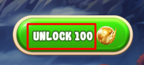
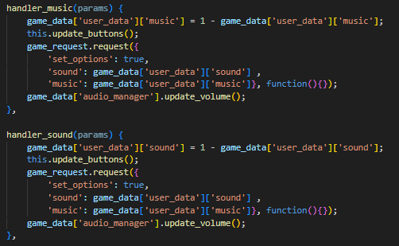
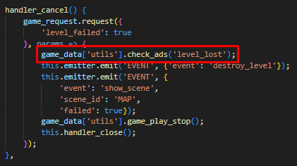

“Fix The Picture” Documentation by “APG” v1.1
“Fix The Picture”
Created: 05/09/2024
By: APG
Email: apggames99@gmail.com
Thank you for purchasing my game. If you have any questions that are beyond the scope of this help file, please feel free to email via my user page contact form here. Thanks so much!
Table of Contents
- Description
- Folder Content
- Getting Started
- Source Code
- Config
- Levels Management
- Language Management
- Store Config
- Audio Management
- Social Api
- Windows Management
- Fonts
- Saving progress
- Change Graphics
- Bundle Build
- Copyright
A) Description - top
Fix The Picture is an HTML5 game powered by Phaser 3. This is a fun and relaxing puzzle game where you restore beautiful images by moving rounded pieces into their correct places. The ZIP package contains the game at a 1280x720 resolution with auto-resize support for landscape mode. This game is playable on all platforms (mobile, PC, etc.).
B) Folder Content - top
- assets This folder contains assets such as sounds, images, fonts, levels, and XML files.
- docs This folder contains documentation.
- content This folder contains graphical sources.
- external This folder is for external plugins and libraries.
- js This folder contains JavaScript code.
- js_min This folder contains minified JavaScript code for a production. Set loading_vars['js_combined'] = true in the index.html if you want the game loads minified code.
- boot.js This is the main JavaScript file where the game is initialized and assets are preloaded.
- config.js This file contains the game configuration settings.
- game_request.js This file contains requests that manage the user's state.
- index.html This is a root HTML file.
- gulpfile.js GULP config.
- package.json Project's metadata.
C) Getting Started - top
To run the game you just need to run index.html in the browser via local server like Apache, Xampp, or another one.
D) Source Code - top
This game contains:
- Phaser 3
- Our custom scripts
- Phaser 3 is a game framework built with JavaScript that allows you to create games using HTML, a little bit of CSS, and JavaScript.
-
The game has the following JavaScript files:
- ./boot.js: this is the main file that preloads assets and initializes the game.
- ./config.js: this file contains the game configuration.
- ./game_request.js: this file contains requests that manage the user's state.
- ./js/game.js: this file is called in boot.js and creates all the internal classes and managers.
- ./js/game_map/game_map.js: this class is responsible for managing the starting scene.
- ./js/game_play/game_play.js: this class is responsible for game logic and gameplay control.
- ./js/game_play/hint_panel.js: this class is responsible for managing hints.
- ./js/game_play/stage_panel.js: this class is responsible for managing level stages.
- ./js/game_play/timer_panel.js: this class is responsible for time management.
- ./js/game_utilities/audio_manager.js: this class manages sound and music control.
- ./js/game_utilities/custom_button.js: this class creates an in-game button.
- ./js/game_utilities/game_utils.js: this class contains various utility functions.
- ./js/game_utilities/graphics_manager.js: this class helps create graphics for windows.
- ./js/game_utilities/loading_overlay.js: this class is responsible for the logic of the loading layer.
- ./js/game_utilities/social_api.js: this class manages social functions.
- ./js/game_utilities/test_ad_manager.js: this class manages test interstitial and rewarded ads.
- ./js/game_windows/game_windows.js: this class controls the creation, management, and deletion of windows.
- ./js/game_windows/buy_money_item.js: this class creates a shop item in the BuyMoney window.
- ./js/game_windows/buy_money.js: this class creates a window with shop positions.
- ./js/game_windows/info.js: this class creates a window that displays game rules.
- ./js/game_windows/level_complete.js: this class creates a window that displays a victory window.
- ./js/game_windows/level_failed.js: this class creates a window that allows you to continue the level by watching a reward ad or by paying a local currency or to exit.
- ./js/game_windows/options.js: this class creates a window that allows open an options.
- ./js/game_windows/purchase_failed.js: this class creates a window that displays a failed purchase.
- ./js/game_windows/purchase_success.js: this class creates a window that displays a successful purchase.
- ./js/game_windows/quit.js: this class creates a window that displays an offer to leave the level.
- ./js/game_windows/select_language.js: this class creates a window that allows for language selection.
- The index.html file preloads boot.js, config.js and game_request.js.
- Then in boot.js the process of preloading and game initialization starts when the ready event is called.
- After that, game.js starts the process of creating other classes, containers and managers.
- After all the creations, the map scene starts, allowing the player to begin playing.
- There is a user data object that defines user progress and behavior. When the user performs any action, a request is sent to update the user data. This data is then updated in localStorage. All the requests can be found in game_request.js. Here is an example of how a request is called when the user completes a level in the GamePlay class:

E) Config - top
The initial configuration can be found in the index.html file, and it contains some basic information.
The gamedata object is in config.js and contains various social and shop-related components.
The userdata object is in config.js and contains information about the user.
F) Levels Management - top
There are 40 levels in the game, all located in the ./assets/levels/ folder. The level.js file contains all the information about the levels.
Here is the configuration for level 1. You can set as many stages as you want. In this example, there are 4 stages, while in other examples there are 3 stages. If you want to have 3 stages in level 1, you should remove an element from the pictures array and the corresponding point from the points array.
This is how it looks in the game. All points' angles are set randomly.
Let's say you want to add a new level with two pictures to the existing 40. To do this:
- Create a folder named ./assets/levels/level41/ and place two pictures in .webp format there. .webp is used in this game because of its smaller size compared to .png or .jpg. There are many converters available online to convert .png or .jpg to .webp.
- Modify the levels array in the levels.js file. Add a new object at the end, set the time parameter, add picture names to the pictures array, and provide two point arrays in the points array.
- If everything is done correctly, the 41st level will be displayed on the GameMap.
There is also an option to enable developer mode. To do this, set game_data['dev_mode'] = true. After that, several additional features will become available to you:
- Each circle displays its text coordinates and radius. This is helpful when you want to modify an existing level or create a new one.
- An "Auto Win" button that, when pressed, advances the game to the next stage.
- Start any level in any order.
- Clicking on a part of the picture shows its coordinates in the console.
G) Language Management - top
There are five languages used in the game: English, French, German, Spanish, and Italian. All of the phrases can be found in ./assets/xml/language.xml. Each phrase has important attributes: scene_id, item_id, and phrase_id, which are needed to call the phrase in JavaScript. Each phrase contains internal tags responsible for specific languages. Each language tag includes two inner tags: <TEXT>, which contains the value, and <SIZE>, which specifies the size value (0 by default). For example, setting -4 will make the phrase smaller by 4 points.
To generate text and set it to the JavaScript Text Object, follow these steps. As shown, you need to call the game_utils.generate_string method and provide scene_id, item_id, phrase_id, values, and base_size. This method returns an object with text and size fields. You can then create bitmap text and set the result accordingly.
I didn't mention the values parameter. For example, if you need a phrase with a dynamic result, you should construct your tag as follows: replace the value with %val, and then pass the desired value into the values array. This option is not used in this game. This is example is from another game.
To add a new phrase, simply add a <DYNAMIC_PHRASE> tag with three attributes and the necessary inner values and tags. Then, call it in the same way as shown in previous examples.
Additionally, you can switch the language during the game by calling the SelectLanguage window.
If you want to remove a language, you should delete its value from the game_data['langs'] array.
H) Store Config - top
There is a shop with four in-app purchases. You can change the price or quantity of any item. You can also add more items, but in that case, you will need to adjust some layout in the buy_money.js and buy_money_item.js files and also add an icon to the common1 atlas named as an id parameter. If a user makes at least one purchase, interstitial ads will no longer be shown.
If you plan to use this functionality in your game where it has its own API, you can implement the logic in the SocialApi purchase method. Here is an example of what this method might look like:
The initial call comes from BuyMoneyItem class.
I) Audio Management - top
Here is path where all sounds and music are located ./assets/audio/ . To call a sound in the game, you should use the following method:
If you want to play looped music, use this method:
If you want to stop all sounds and music, use this method:
You can also stop a specific sound or music, though this case is not used in the game. If you want to do this, you should call game_data['audio_manager'].sound_event({'stop': true, 'sound_type': 'sound' // or 'music'});
There are two fields in the userdata object that define the state of music and sounds.

The control of these fields is managed through two methods in the GameMap class.
J) Social Api - top
If you decide to publish this game anywhere, you should initialize the social features (rewarded ads, interstitial ads, etc.). Consider using the SocialApi class in the game_utilities/social_api.js file as the base for your own implementation. Here is an example of a test net ID social class with mock code:
Here is the initialization of the SocialApi class in the game.js file.
To call a rewarded ad, you should use the game_data['utils'].show_rewarded_ad method. For an example, you can refer to the LevelFailed class.
To call an interstitial ad, you should use the game_data['utils'].check_ads method. For an example, you can refer to the LevelFailed class or the GameMap class.
In this example, the parameter passed is the string "level_lost". To make it clearer, you should consider the game_data['ads']['interstitial']['event_mult'] object. Here, you can see a key with a float value. This indicates the place in the game where the ad could be called and the probability of it being called (e.g., 1 means the ad will be called every time, while 0.3 means the ad will be called 3 times out of 10 on average).
To summarize, let's say you want to publish a game on the Y platform with in-app payments, interstitial ads, and rewarded ads. The platform will provide its own API. To integrate the game with Y, follow these steps:
- Change loading_vars['net_id'] in the index.html file to 'y' for example.
- Implement a class in ./js/game_utilities/social_api.js as shown below.
- Initialize this class in the get_social_api method (./js/game.js) as shown below.
- If the platform offers cloud storage for saving progress, add code to game_request.js in the save_user_data and get_game_info_local methods as follows:
- If the platform requires an initialization process, add it to the initialize function in boot.js as shown below.


K) Windows Management - top
To display any window, you should call the following:
To close this window:

If you want to create your own window, you should initialize it in the display_window method's switch case statement in the ./js/game_windows/game_windows.js file.
All window methods, such as open, close, etc., are located in the ./js/game_windows/game_windows.js file.
L) Fonts - top
There is one font type used in the game: Outline Font. It is located in the assets/fonts/ folder. Here is an example of creating an outline text:
To use outline text, the assets/fonts/fontLoader1.css file is used and is called in index.html. There is an HTML issue where you need to assign this font to an element that will not be used; otherwise, some of your game text may not display correctly.
If you want to use your own font, place it in the ./assets/fonts/ directory in .ttf format. Then, open ./assets/fonts/fontLoader.css and update the font names in the indicated places.
M) Saving progress - top
The current version uses localStorage to save progress. If you don't want localStorage to save progress, set game_data['clear_storage'] = true. This logic is implemented in game_request.js. The get_game_info_local method checks if there was previous progress, and if so, it uses that progress. The save_user_data method saves progress and is called after any request made during the game, such as a buy_booster request. If you want to use a different storage method, you need to implement its API in these methods. An example is shown in the Social API section.
N) Change Graphics - top
Most graphics used in the game are taken from the common1 sprite sheet (./assets/common1.png, ./assets/common1.json). The source graphics are located in ./content/common1/. You can modify any graphics in ./content/common1/ and rebuild the sprite sheet using the TexturePacker tool and place it into ./assets/ folder. Don't forget to save graphics with names assigned before. Otherwise, the game will not display it correctly. Additionally, you can change the background in ./assets/bgs/back.jpg to one of your preference.
O) Bundle Build - top
If you set loading_vars['js_combined'] to true, the preloader will try to get the bundle.js file. This is intended for production mode. There are gulpfile.js and package.json files to build. You should install NPM and then run the following commands:
- npm i
- npm start
P) Copyright - top
All images used in the game were generated with the Midjourney tool and are free to use commercially.
All sounds and music are free to use commercially and obtained from the following resources:
Once again, thank you so much for purchasing this game. Feel free to contact us if you have any questions or issue relating to this game. No guarantees, but we'll do our best to assist.
APG